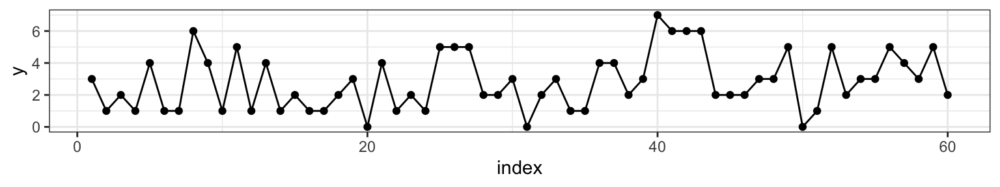
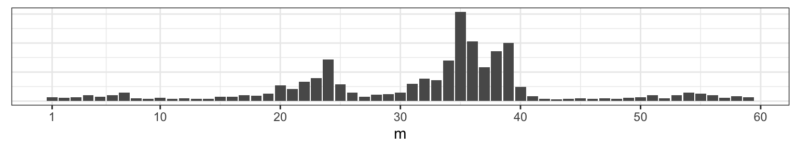

11 Changepoint Problem
11.1 Preliminaries for the Changepoint Problem
Thanks to Andrew Bray at Reed College as well as Ilker Yildirim “Bayesian Inference: Gibbs Sampling” at http://www.mit.edu/~ilkery/papers/GibbsSampling.pdf
Consider a series of Poisson random variables, \(Y_1, Y_2, \ldots, Y_n\). At some unknown point, \(m\), the rate of the Poisson distribution changed. That is,
\[\begin{align} Y_1, \ldots, Y_m &\sim \textrm{Poi}(\mu) \\ Y_{m+1}, \ldots, Y_n &\sim \textrm{Poi}(\lambda) \end{align}\]
To get a sense of what we’re talking about, let’s pick \(\mu =\) 2, \(\lambda =\) 4 and \(m =\) 38 (at \(n =\) 60). We can visualize one realization of this process by plotting the index against the combined Poisson vector of counts from both random variables \(\{Y_{\mu}, Y_{\lambda} \}\).

Our goal is to assess when the change occurred by learning the posterior distribution of the parameter \(m\) by synthesizing our prior expectation with the observed data.
11.2 I. Specifying priors
When thinking about a prior distribution, it’s important that distribution’s support match the conceivable values of the parameter. In the case of the Poisson rate parameter, that means we need to be looking for a density function that is non-zero over the positive real line. While there are many (indeed infinitely many) to choose from, we’ll select the Gamma distribution because it is fairly flexible and happens to be a conjugate prior for the Poisson.
Let’s say that based on my prior knowledge of this process, I have reason to think that the process had a lower rate before the change and a higher rate after the change (note that this needs to be selected before looking at the plot above). I’ll select
\[\begin{align} \mu &\sim \textrm{Gamma}(\alpha = 10, \beta = 4) \\ \lambda &\sim \textrm{Gamma}(\nu = 8, \phi = 2). \end{align}\]

The third parameter that governs this process is \(m\), the changepoint. If we assume that the data set has at least one observation from each Poisson distribution, then \(m\) can take integer values between 1 and \(n - 1\). Any discrete distribution on those integers will work. We’ll express our ambivalence concerning its value by specifying a flat prior.
\[ m \sim \textrm{Unif}\{1, 2, \ldots, n - 1\} \]
11.3 II. Full Joint Distribution
While our primary interest is the posterior distribution of \(m\), to get there we need to start by writing down the joint distribution of all the parameters and all of the data, \(f(Y_\mu, Y_\lambda, \mu, \lambda, m)\). This is an unusual expression for those that have spent most of their time with frequentist statistics. To a Bayesian, though, these are all random variables, so it’s no problem to think about their joint distribution.
If each of these random variables were independent of one another, we could write their joint distribution like this.
\[ f(Y_\mu, Y_\lambda, \mu, \lambda, m) = f(Y_\mu)f(Y_\lambda)f(\mu)f(\lambda)f(m) \] But if we went to write down the first term, \(f(Y_\mu)\), we’d find it’s actually a function of two other random variables, \(\mu\) and \(m\). So the full joint probability is more accurately expressed as,
\[ f(Y_\mu, Y_\lambda, \mu, \lambda, m) = f(Y_\mu\,|\,\mu, m)f(Y_\lambda\,|\,\lambda, m)f(\mu)f(\lambda)f(m) \] The last three terms are fine to leave as marginal probabilities since they are independent of one another and of the conditional distributions of data. Next we substitute in the respective density functions, keeping in mind that the data are vectors, so we’ll use the product notation shorthand.
\[\begin{align} f(Y_\mu, Y_\lambda, \mu, \lambda, m) &\propto \prod_{i = 1}^{m} \left( \frac{\mu^{Y_i}e^{-\mu}}{Y_i!} \right) \prod_{j = m+1}^{n} \left( \frac{\lambda^{Y_j}e^{-\lambda}}{Y_j!} \right) \frac{\beta^\alpha}{\Gamma(\alpha)}\mu^{\alpha - 1}e^{-\beta \mu} \frac{\phi^\nu}{\Gamma(\nu)}\lambda^{\nu - 1}e^{-\phi \lambda} \end{align}\]
It looks like a mess right now, but it’s a useful formulation to have on hand when thinking about posterior distributions.
11.4 III. Joint Posterior
To move from the full joint to the joint posterior distribution of just the parameters given the data, we’ll use the following definition of conditional probability.
\[\begin{align} f(\mu, \lambda, m \,|\, Y_\mu, Y_\lambda) = \frac{f(Y_\mu, Y_\lambda, \mu, \lambda, m)}{f(Y_\mu, Y_\lambda)} \end{align}\]
If you look at the denominator, that’s what we’d get if we took the joint distribution in the numerator and integrated over all values of the parameters. This leaves us with an expression that is only a function of the data, and since we’ll be conditioning on those, the denominator is just a constant, which we’ll call \(1/c\). So we can rewrite like this:
\[\begin{align} f(\mu, \lambda, m \,|\, Y_\mu, Y_\lambda) = c \,f(Y_\mu, Y_\lambda, \mu, \lambda, m) \end{align}\]
To get an expression that is clearly a function of the parameters, let’s expand out the term on the right but move any terms that aren’t a function of \(\mu\), \(\lambda\), or \(m\) into \(c\) (which is now a different constant but we’ll still call it \(c\)).
\[\begin{align} f(\mu, \lambda, m \,|\, Y_\mu, Y_\lambda) &= c \,f(Y_\mu, Y_\lambda, \mu, \lambda, m) \\ &= c \,\prod_{i = 1}^{m} \left( \frac{\mu^{Y_i}e^{-\mu}}{Y_i!} \right) \prod_{j = m+1}^{n} \left( \frac{\lambda^{Y_j}e^{-\lambda}}{Y_j!} \right) \frac{\beta^\alpha}{\Gamma(\alpha)}\mu^{\alpha - 1}e^{-\beta \mu} \frac{\phi^\nu}{\Gamma(\nu)}\lambda^{\nu - 1}e^{-\phi \lambda} \frac{1}{n - 1} \\ &= c \,\prod_{i = 1}^{m} \left( \mu^{Y_i}e^{-\mu} \right) \prod_{j = m+1}^{n} \left( \lambda^{Y_j}e^{-\lambda} \right) \mu^{\alpha - 1}e^{-\beta \mu} \lambda^{\nu - 1}e^{-\phi \lambda} \\ &= c \, \mu^{\sum_{i=1}^{m}Y_i}e^{-m\mu} \lambda^{\sum_{j=m+1}^{n}Y_j}e^{-(n - m)\lambda} \mu^{\alpha - 1}e^{-\beta \mu} \lambda^{\nu - 1}e^{-\phi \lambda} \\ &= c \, \mu^{\alpha + \sum_{i=1}^{m}Y_i - 1}e^{-(\beta + m) \mu} \lambda^{\nu + \sum_{j=m+1}^{n}Y_j - 1}e^{-(\phi + n - m)\lambda} \end{align}\]
11.5 IV. Conditional Posteriors
11.5.1 Posterior for m
The key to implementing a Gibbs Sampler is to secure the conditional distribution of the parameters. We can find them from the joint posterior distribution by repeating the same technique of conditioning: treating this as a function of just the parameter of interest and dividing by the new normalizing constant. Staring with \(m\), the normalizing constant is \(f(\mu, \lambda \,|\, Y_\mu, Y_\lambda)\), which can be found by summing the joint posterior over all possible values of \(m\). If we take \(\mu\) to be \(A\) and \(\lambda\) to be \(B\), this is just an application of the law of total probability, \(P(A) = \sum_n A\cap B_n\).
\[\begin{align} f(m \,|\, \mu, \lambda, Y_\mu, Y_\lambda) &= \frac{f(\mu, \lambda, m \,|\, Y_\mu, Y_\lambda)}{f(\mu, \lambda \,|\, Y_\mu, Y_\lambda)} \\ &= \frac{c \, \mu^{\alpha + \sum_{i=1}^{m}Y_i - 1}e^{-(\beta + m) \mu}\lambda^{\nu + \sum_{j=m+1}^{n}Y_j - 1}e^{-(\phi + n - m)\lambda}} {\sum_{k = 1}^{n - 1} c \, \mu^{\alpha + \sum_{i=1}^{k}Y_i - 1}e^{-(\beta + k) \mu}\lambda^{\nu + \sum_{j=k+1}^{n}Y_j - 1}e^{-(\phi + n - k)\lambda}} \end{align}\]
Once we cancel out the \(c\), this serves as our discrete posterior distribution on \(m\).
11.5.2 Posterior for \(\mu\)
We can repeat this same process to find the conditional posterior for \(\mu\), which requires that we first find the normalizing constant \(f(\lambda, m \,|\, Y_\mu, Y_\lambda)\).
\[\begin{align} f(\lambda, m \,|\, Y_\mu, Y_\lambda) &= \int_0^\infty f(\mu, \lambda, m \,|\, Y_\mu, Y_\lambda) \, \textrm{d}\mu \\ &= \int_{0}^{\infty}c \, \mu^{\alpha + \sum_{i=1}^{m}Y_i - 1}e^{-(\beta + m) \mu}\lambda^{\nu + \sum_{j=m+1}^{n}Y_j - 1}e^{-(\phi + n - m)\lambda} \, \mathrm{d} \mu \\ &= c \, \lambda^{\nu + \sum_{j=m+1}^{n}Y_j - 1}e^{-(\phi + n - m)\lambda} \int_{0}^{\infty} \mu^{\alpha + \sum_{i=1}^{m}Y_i + 1} e^{-(\beta + m)\mu} \mathrm{d} \mu \\ &= c \, \lambda^{\nu + \sum_{j=m+1}^{n}Y_j - 1}e^{-(\phi + n - m)\lambda} \frac{\Gamma(\alpha + \sum_{i=1}^{m}Y_i)}{(\beta + m)^{\alpha + \sum_{i=1}^{m}Y_i}} \int_{0}^{\infty} \frac{(\beta + m)^{\alpha + \sum_{i=1}^{m}Y_i}}{\Gamma(\alpha + \sum_{i=1}^{m}Y_i)} \mu^{\alpha + \sum_{i=1}^{m}Y_i + 1} e^{-(\beta + m)\mu} \mathrm{d} \mu \\ &= c \, \lambda^{\nu + \sum_{j=m+1}^{n}Y_j - 1}e^{-(\phi + n - m)\lambda} \frac{\Gamma(\alpha + \sum_{i=1}^{m}Y_i)}{(\beta + m)^{\alpha + \sum_{i=1}^{m}Y_i}} \end{align}\]
In step 4 above we introduced a constant and it’s reciprocal so that the function being integrated is recognizable as the pdf of a Gamma random variable, which evaluates to 1 in the step 5. With this normalizing constant in hand, we can write out the form of the posterior for \(\mu\).
\[\begin{align} f(\mu \,|\, \lambda, m, Y_\mu, Y_\lambda) &= \frac{f(\mu, \lambda, m, \,|\, Y_\mu, Y_\lambda)}{f(\lambda, m \,|\, Y_\mu, Y_\lambda)} \\ &= \frac{c \, \mu^{\alpha + \sum_{i=1}^{m}Y_i - 1}e^{-(\beta + m) \mu}\lambda^{\nu + \sum_{j=m+1}^{n}Y_j - 1}e^{-(\phi + n - m)\lambda}}{c \, \lambda^{\nu + \sum_{j=m+1}^{n}Y_j - 1}e^{-(\phi + n - m)\lambda} \frac{\Gamma(\alpha + \sum_{i=1}^{m}Y_i)}{(\beta + m)^{\alpha + \sum_{i=1}^{m}Y_i}}} \\ &= \frac{(\beta + m)^{\alpha + \sum_{i=1}^{m}Y_i}}{\Gamma(\alpha + \sum_{i=1}^{m}Y_i)} \mu^{\alpha + \sum_{i=1}^{m}Y_i - 1}e^{-(\beta + m) \mu} \end{align}\]
Which is recognizable as the pdf of the a Gamma random variable. Therefore,
\[ \mu \,|\, m, Y_\mu \sim \textrm{Gamma}(\alpha + \sum_{i=1}^{m}Y_i, \beta + m) \]
11.5.3 Posterior for \(\lambda\)
The approach that we used to find the posterior distribution of \(\mu\) is the very same that we can carry out on \(\lambda\). Instead of replicating all of the steps, we’ll note the link between the joint posterior and posterior for \(\mu\) and use the same mapping to assert that,
\[ \lambda \,|\, m, Y_\lambda \sim \textrm{Gamma}(\nu + \sum_{i=m+1}^n Y_i, \phi + n - m) \]
11.6 Gibbs Sampler
To draw samples from the joint posterior \(f(\mu, \lambda, m \,|\, Y_\mu, Y_\lambda)\), we will form a Markov chain that begins by initializing a value for \(m_{j-1}\), then iterates through the following three steps many times.
- Sample \(\mu_j\) from \(\textrm{Gamma}(\alpha + \sum_{i=1}^{m_{j-1}}Y_i, \beta + m_{i-j})\)
- Sample \(\lambda_j\) from \(\textrm{Gamma}(\nu + \sum_{i=m_{j-1}+1}^n Y_i, \phi + n - m_{j-1})\)
- Sample \(m_j\) from \(f(m \,|\, \mu_{j}, \lambda_j, Y_{\mu_{j}}, Y_{\lambda_{j}})\)
We’ll run our Gibbs sampler 5,000 times and store the results in a matrix called post_samples. Note that we’re moving back into the specific scenario where \(n = 60\), \(\alpha = 10\), \(\beta = 4\), \(\nu = 8\), and \(\phi = 2\).
it <- 5000
post_samples <- matrix(rep(NA, it * 3), ncol = 3)
colnames(post_samples) <- c("mu", "lambda", "m")
m_j <- 2 # initialize m
for (j in 1:it) {
# sample mu
mu_j <- rgamma(1, alpha + sum(y[1:m_j]), beta + m_j)
# sample lambda
lambda_j <- rgamma(1, nu + sum(y[(m_j+1):n]), phi + (n - m_j))
# sample m
m_vec <- rep(NA, n - 1)
for (k in 1:(n - 1)) {
m_vec[k] <- mu_j^(alpha + sum(y[1:k]) - 1) *
exp(-(beta + k) * mu_j) *
lambda_j^(nu + sum(y[(k+1):n]) - 1) *
exp(-(phi + n - k) * lambda_j)
}
p <- m_vec/sum(m_vec)
m_j <- sample(1:(n - 1), size = 1, prob = p)
# store results
post_samples[j, "mu"] <- mu_j
post_samples[j, "lambda"] <- lambda_j
post_samples[j, "m"] <- m_j
}11.6.1 Convergence
After gathering the results from running a Gibbs Sampler, it’s a good idea to investigate the convergence. We started with a fairly extreme initial value for \(m\), so let’s look at the first 500 \(m\)s that we drew.
We see that the chain escaped the initial value very quickly. Part of the reason for this is the conditional independence of two of the three parameters. Let’s plot the full sample across all indices.

11.7 Conclusions
Returning to the question that motivated this example, what is our updated best guess for when the changepoint occurred? We can start by looking at the posterior distribution on \(m\).
Those two prominent modes are at 34 and 27, so those are probably fine point estimates for \(m\) based on this data and your prior information. Before you try to puzzle through why there might be two modes, consider what happens if we change our our random seed at the outset, where we first generated the data.

This reveals that with a flat prior on \(m\), the posterior will be drawing most of it’s structure from the data, which, at these sample sizes, are still subject to considerable sampling variability.
11.8 Appendix
11.8.1 Density functions
The random variable \(X\) is Poisson if,
\[ f(x \,|\, \lambda) = \frac{\lambda^x e^{-\lambda}}{x!} \, ; \quad \quad \lambda > 0, x \in \{0, 1, 2, \ldots \} \]
The random variable \(X\) is Gamma if,
\[ f(x\,|\,\alpha, \beta) = \frac{\beta^\alpha}{\Gamma(\alpha)}x^{\alpha - 1}e^{-\beta x} \, ; \quad \quad \alpha > 0, \beta > 0, x \in \{0, \infty \} \]
Where \(E(X) = \frac{\alpha}{\beta}\) and \(Var(X) = \frac{\alpha}{\beta^2}\)